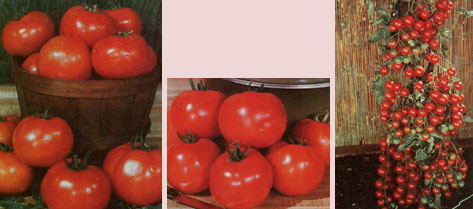

Succulent red tomatoes are by far America's favorite garden crop... they're grown in over 90% of all vegetable gardens. Varieties such as Burpee's Big Early (left) ... the disease-resistant Flor-america VF (below) ... and the bountiful Sweet 100 (right) can be the hit of your vegetable plot!